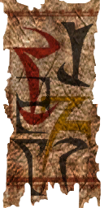
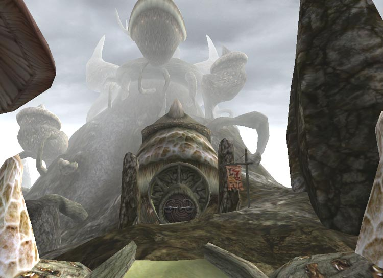
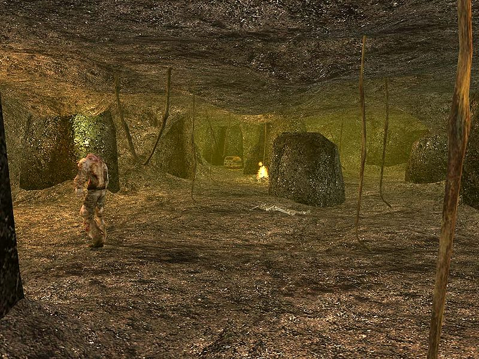
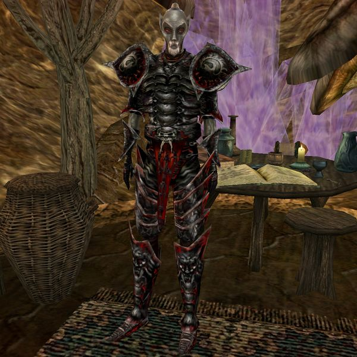

| Tel Fyr |
| Alignment: Telvanni |
| Region: Azura's Coast |
|
Transport:
Almsivi Intervention:
Divine Intervention:
|
|
Services:
none |
|  |
|  Tel Fyr, Azura's Coast region |
|  The Corprusarium |
|  Divayth Fyr |
Tel Fyr is a remote Telvanni Tower, located directly south of Tel Aruhn and southwest of Sadrith Mora, on an island just off the mainland. Although it has a dock, it is not on any transport route, and the only real means of getting there is to swim from Tel Aruhn or Sadrith Mora. It is also possible to walk through Molag Amur from Molag Mar, but this is a significantly longer route. Unlike most of the other Telvanni towers on Vvardenfell, most of Tel Fyr is built into a large hill, as opposed to being a free-standing organic growth.
Its main resident, Divayth Fyr, is proof of the Telvanni maxim that rank is insignificant next to the power to do whatever one desires. Divayth is not generally addressed as "Lord Fyr" and is not a member of the Council (despite invitation), but he is nevertheless one of the most significant and powerful of the Telvanni Lords.
In the Third Era, Divayth Fyr had turned his back on most of the affairs of men. He converted most of Abanabi Cave into the Corprusarium, a place where he experimented with the Corprus Disease. Whether the Corprusarium is a compassionate endeavor or simply a good means of gaining experimental subjects, it still is a place of value to all factions and segments of Morrowind society who want an alternative to simply killing family or companions who contract the dreaded disease.
There is no town around the tower, and no real services in the Tower, aside from the Corprusarium. Divayth lives there with his four "daughters", and one or two guests. Inside, Tel Fyr is split into three levels; the entrance level (the "Onyx hall"), the upper level (the "Hall of Fyr"), and the Corprusarium. The lower two levels are accessible to those who are not adept in the use of magic. However, the upper level, where Divayth Fyr himself may be found, requires levitation or a good jump spell to navigate. Two potions of Rising Force can be found in the bottom section of the Hall of Fyr if you forgot to bring your own.
Delyna Mandas is held captive behind a locked golden door; she can train you and ultimately get you an ebony closed helm if you help her out. It seems that Divayth Fyr has forgotten that she's even there... Also, there is a locked Dwemer chest near the door that contains a sum of Dwemer coins and one of Divayth's keys to unlocking chests in the Corprusarium. Two of Divayth's "daughters" - Beyte and Delte Fyr - can be found here: Beyte at the entrance, and Delte in front of the door to the Corprusarium.
There are some good items Divayth doesn't mind if you win, as long as you do so according to his rules. It is also rumored that this reclusive wizard, who generally wears full Daedric armor apart from the helmet, has collected numerous rare and interesting items during his own more adventurous youth. All the chests are locked and trapped. The one across the hall from Fyr holds the Cuirass of the Savior's Hide, while the chest next to Fyr contains Scourge and a smaller chest on his shelves contains the Daedric Sanctuary Amulet. Most of these chests have a key somewhere but he doesn't react if you pick the locks. There are two empty grand soul gems on a shelf in a chamber in the lower part of the Hall of Fyr: these (and everything else in the room, including another locked chest and some smaller soul gems) are all considered as owned by Fyr, so taking them will indeed raise the alarm if anybody sees you - however there is nobody in this particular room to raise objection, since Alfe Fyr is at the top end of the levitation tube, keeping her father company - although if you are ever arrested by a guard elsewhere, the items will be impounded as stolen goods.
While he doesn't mind you looting his locked chests, he does mind if you try to take his books or anything else lying around in the open. His library contains some unique books, and many provide some interesting information on the world, so it is worth a visit.
Also in the lower part of the Hall of Fyr - if you have completed the Tribunal Temple quest to persuade her to leave Vivec City - is the corprus-afflicted pilgrim, Tanusea Veloth. Her disease, fortunately, is still in the earliest stages, and progressing only slowly, so she is still in the luxury guest rooms rather than having been confined to the Corprusarium, and she reports that Fyr is treating her very kindly.
Divayth Fyr does have a sense of humor, and of sport. He often offers adventurers keys to treasure chests in the Corprusarium. If adventurers accept, the challenge is to find the chest the key fits among the many chests dispersed through the dungeon. You must do so without getting killed, and without hurting any of the corprus creatures attacking you. Success at finding and opening the chest means you get some treasure, and another key. His Warden, Vistha-Kai the Argonian, mentions that he will also try to stop you stealing the treasures - but he never leaves his post and none of the locked chests are within sight of it. However if you harm any of the inmates, then all the inhabitants of the tower - Divayth Fyr, his four daughters, and Vistha-Kai - will turn hostile. The inmates can, fortunately, be pacified: Uupse Fyr explains that they seem to enjoy listening to her playing a soothing rhythm on a guarskin drum which is, conveniently, also to be found in the Corprusarium, so find it and bring it back to her, and all the corprus inmates will remain peaceful (note she won't play the drum until you get up to the Corprus cure part of the main quest). Alternatively, be good at sneaking, use Invisibility or Chameleon, or simply run away from them, since none of them are very fast.
At the north end are Uupse Fyr and the last living Dwemer, Yagrum Bagarn. He can help you to find answers about what happened to the Dwemer and translate many interesting books you might find on your travels. Beside them is a locked Dwemer closet containing six skill books, full Dwemer armor, and two hundred and forty-six Dwemer coins (be careful, as unlike the chests, looting the closet will turn Uupse and Yagrum hostile: it belongs to Uupse who is standing right next to it). The chest in front of Uupse holds the hammer Volendrung and fifty Dwemer coins, free to anyone who can open it.
There is no fast-travel to Tel Fyr, the closest connection is in Sadrith Mora and Wolverine Hall to the northeast. You'll have to cross the water by swimming, water walking or levitation.